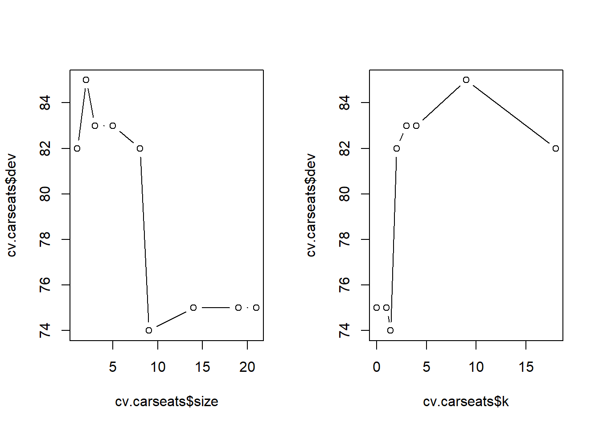
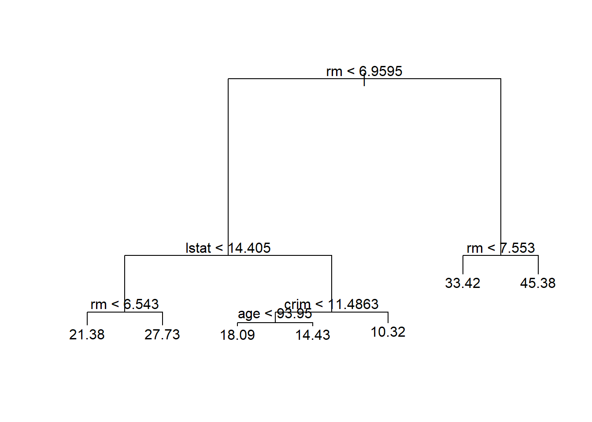
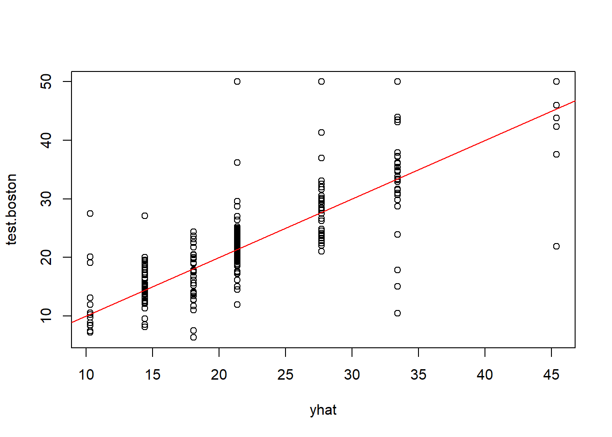

Code
library(tree)
library(ISLR2)All the code here is derived from the legendary book ISRL 2nd edition’s chapter 8 “Decision Trees”. Its sometimes a wonder how elegant the base R language can be. The ISRL lab rarely mentions tidyverse syntax but yet manages to make the code so easy to read. The more you learn!🤓
library(tree)
library(ISLR2)In today’s lab, we will be using the Carseats dataset from the ISLR2 package.
str(Carseats)'data.frame': 400 obs. of 11 variables:
$ Sales : num 9.5 11.22 10.06 7.4 4.15 ...
$ CompPrice : num 138 111 113 117 141 124 115 136 132 132 ...
$ Income : num 73 48 35 100 64 113 105 81 110 113 ...
$ Advertising: num 11 16 10 4 3 13 0 15 0 0 ...
$ Population : num 276 260 269 466 340 501 45 425 108 131 ...
$ Price : num 120 83 80 97 128 72 108 120 124 124 ...
$ ShelveLoc : Factor w/ 3 levels "Bad","Good","Medium": 1 2 3 3 1 1 3 2 3 3 ...
$ Age : num 42 65 59 55 38 78 71 67 76 76 ...
$ Education : num 17 10 12 14 13 16 15 10 10 17 ...
$ Urban : Factor w/ 2 levels "No","Yes": 2 2 2 2 2 1 2 2 1 1 ...
$ US : Factor w/ 2 levels "No","Yes": 2 2 2 2 1 2 1 2 1 2 ...Creating a column called High which takes a Y/N value depending on the sales and then merge it with the Carseats df.
attach(Carseats)
High <- factor(ifelse(Sales <= 8, "No", "Yes"))
Carseats <- data.frame(Carseats, High)CarseatsCreating a classification tree to predict High using all variables except Sales
set.seed(1)
tree.carseats <- tree(High ~ .-Sales, data = Carseats)
summary(tree.carseats)
Classification tree:
tree(formula = High ~ . - Sales, data = Carseats)
Variables actually used in tree construction:
[1] "ShelveLoc" "Price" "Income" "CompPrice" "Population"
[6] "Advertising" "Age" "US"
Number of terminal nodes: 27
Residual mean deviance: 0.4575 = 170.7 / 373
Misclassification error rate: 0.09 = 36 / 400 Misclassification error of 9% is a good fit. Let’s try plotting it
plot(tree.carseats)
text(tree.carseats, pretty =0 )
set.seed(2)
train <- sample(1:nrow(Carseats), 200)
Carseats.test <- Carseats[-train,]
High.test <- High[-train]
tree.carseats <- tree(High ~ .-Sales, data = Carseats,
subset = train)checking the top few rows of predicted columns
tree.predict <- predict(tree.carseats, Carseats.test,
type = "class") #type is needed to declare classification model
head(tree.predict)[1] Yes No No Yes No No
Levels: No YesComparing predicted with actual values
table(tree.predict, High.test) High.test
tree.predict No Yes
No 104 33
Yes 13 50What’s the accuracy?
(104+50)/200[1] 0.7777% Accuracy
To improve the accuracy, lets attempt to prune the tree. For this cv.tree() function is used to determine the optimal level of tree complexity. Here the FUN argument is taken as prune.misclass to indicate that the cross-validation and tree pruning should be guided by the classification error instead of the default deviance.
set.seed(7)
cv.carseats <- cv.tree(tree.carseats, FUN = prune.misclass)
names(cv.carseats)[1] "size" "dev" "k" "method"Note to self:
k is the regularisation parameter \(\alpha\) (alpha)size is # of terminal nodes for each treedev is the number of cross-validation errorscv.carseats$size
[1] 21 19 14 9 8 5 3 2 1
$dev
[1] 75 75 75 74 82 83 83 85 82
$k
[1] -Inf 0.0 1.0 1.4 2.0 3.0 4.0 9.0 18.0
$method
[1] "misclass"
attr(,"class")
[1] "prune" "tree.sequence"Visualising the tree. The classification error is least (74) at size = 9
par(mfrow = c(1,2))
plot(cv.carseats$size, cv.carseats$dev, type = "b")
plot(cv.carseats$k, cv.carseats$dev, type = "b")
Using the prune.misclass() function to prune the tree to the 9-node specification.
prune.carseats= prune.misclass(tree.carseats, best = 9)
plot(prune.carseats)
text(prune.carseats, pretty = 0)
Checking the accuracy in the good-old fashioned way (its really that simple!)🤓
prune.tree.pred <- predict(prune.carseats, Carseats.test, type = "class")
table(prune.tree.pred, High.test) High.test
prune.tree.pred No Yes
No 97 25
Yes 20 58So what’s the accuracy?
(97+58)/200[1] 0.77577.5% which is slightly better than the non-pruned tree. Not bad.
tidymodels interface allows for managing the resulting output and models in a more structured way.Boston datasetBoston dataset contains housing values of 506 suburbs of Boston. We are trying to predict the median value of the owner-occupied homes medv
str(Boston)'data.frame': 506 obs. of 13 variables:
$ crim : num 0.00632 0.02731 0.02729 0.03237 0.06905 ...
$ zn : num 18 0 0 0 0 0 12.5 12.5 12.5 12.5 ...
$ indus : num 2.31 7.07 7.07 2.18 2.18 2.18 7.87 7.87 7.87 7.87 ...
$ chas : int 0 0 0 0 0 0 0 0 0 0 ...
$ nox : num 0.538 0.469 0.469 0.458 0.458 0.458 0.524 0.524 0.524 0.524 ...
$ rm : num 6.58 6.42 7.18 7 7.15 ...
$ age : num 65.2 78.9 61.1 45.8 54.2 58.7 66.6 96.1 100 85.9 ...
$ dis : num 4.09 4.97 4.97 6.06 6.06 ...
$ rad : int 1 2 2 3 3 3 5 5 5 5 ...
$ tax : num 296 242 242 222 222 222 311 311 311 311 ...
$ ptratio: num 15.3 17.8 17.8 18.7 18.7 18.7 15.2 15.2 15.2 15.2 ...
$ lstat : num 4.98 9.14 4.03 2.94 5.33 ...
$ medv : num 24 21.6 34.7 33.4 36.2 28.7 22.9 27.1 16.5 18.9 ...Creating the training set for Boston which is half the size of the original
set.seed(1)
train.boston <- sample(1:nrow(Boston), nrow(Boston)/2)Building the tree
tree.boston <- tree(medv ~ ., data = Boston, subset = train.boston)
summary(tree.boston)
Regression tree:
tree(formula = medv ~ ., data = Boston, subset = train.boston)
Variables actually used in tree construction:
[1] "rm" "lstat" "crim" "age"
Number of terminal nodes: 7
Residual mean deviance: 10.38 = 2555 / 246
Distribution of residuals:
Min. 1st Qu. Median Mean 3rd Qu. Max.
-10.1800 -1.7770 -0.1775 0.0000 1.9230 16.5800 only 4 predictors rm, lstat, crim, age were used. (wonder why?) Plotting the decision tree
plot(tree.boston)
text(tree.boston, pretty = 0)
yhat <- predict(tree.boston, newdata = Boston[-train.boston,])
test.boston <- Boston[-train.boston,"medv"]
plot(yhat, test.boston)
abline(0,1, col = "red")
Mean Square Error is defined as \[MSE = \frac{1}{n} \sum_{i=1}^{n}(y_i - \hat{y_i})^2\]
mean((yhat - test.boston)^2)[1] 35.28688Standard Deviation the square root of MSE which is
(mean((yhat - test.boston)^2))^0.5[1] 5.940276As the SD is the same units as the outcome variable, we can say that this model leads to predictions which on an average are within ±$5,940 of the true median home value. Can we do better? Let’s keep digging
Note: Bagging is a special case of Random Forest where \(m = p\). The randomForest() function can be used for evaluating predictions from both bagging & RF.
\(m\) = sample number of predictors
\(p\) = total number of available predictors